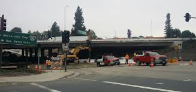

Project Details
- Category: Consultant Construction Management & Inspection Projects
- Owner: SANBAG
- Location: Redlands/Yucaipa, CA
- Delivery Method: Design-Bid-Build
- Status / Completion: 2007

The I-10 Truck Climbing Lane Project was developed by SANBAG to improve traffic flow and safety along a 3.5-mile section of eastbound I-10. The corridor had steep grades that slowed truck traffic, creating congestion for commuter and freight vehicles. The project included widening lanes, reconstructing interchanges, and improving drainage and roadway structures, representing a high-value infrastructure improvement in San Bernardino County.
Provided full construction management, resident engineering, and QA inspection Supervised material testing (concrete, HMA, soils) Implemented SWPPP requirements and maintained Caltrans safety standards Monitored CPM baseline and update schedules for timely delivery Conducted weekly meetings with contractors, Caltrans, cities, and utility agencies
Delivered project below budget with no agency-caused delays Maintained stringent safety and SWPPP compliance Ensured minimal disruption to traffic and coordinated with multiple stakeholders effectively
1

900x0 s3 57036 W CA 115 22 IR 5

Chrisphoto2 102316 64th Ave (1)

images